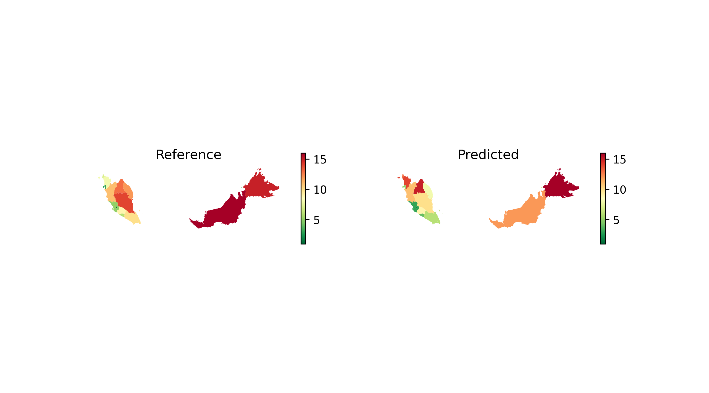
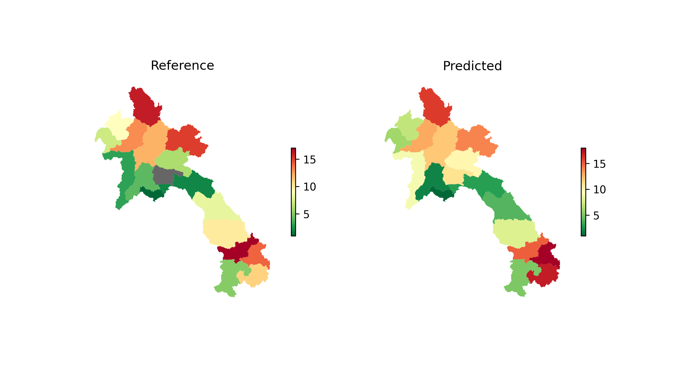

Model Rollouts Summary
At A Glance
This page summarizes our findings and learnings from developing a cross-country poverty estimation model and rolling it out for 9 countries in Southeast Asia
Model Rollout
The following figure describe our model rollout process for the 9 countries.
We were able to successfully train and use models to estimate wealth over the 9 countries using this approach. The output wealth estimations captures macro-level urbanization, predicting relatively higher wealth at major urban centers and lower wealth at remote and sparsely populated areas. These results qualitatively show good agreement by Meta’s RWI, showing that we can achieve good results in wealth estimation using only openly-available datasets and ground truth DHS data from 4 countries as our training data.
Resulting wealth estimates for the 9 SEA countries can be downloaded here.
Validating Results With Reference Data
We validated our model rollout results with the best available reference wealth data for 3 countries. We took the mean wealth predictions for both model predictions and the reference data per adminstrative boundary and ranked each area from highest to lowest wealth. From this, we created comparison maps and calculated the spearman rank correlation between the predicted and reference wealth rank.
| Country | Reference Comparison Data | Granularity | # of Evaluation Areas | Spearman Rank Correlation |
|---|---|---|---|---|
| Indonesia | Susenas RWI | Admin Level 2 (City/Regency) | 513 | 0.72 |
| Malaysia | Relative poverty by State | Admin Level 1 (State / Federal Territory) | 16 | 0.78 |
| Laos | MICS Survey IWI (Asset-based index) | Admin Level 1 (Province) | 17 | 0.75 |


Scaling
As previously discussed in our cross-country experiments summary, we found that scaling the input features and DHS Wealth Index from absolute to relative values corrects country-level variations. This approach leads to the best cross-country results.
During training, we found that StandardScaler produced the best metrics and chose it as our model. StandardScaler works by centering the data on the mean and using the standard deviation as the “unit”. Our model interprets the data as relative, meaning that if an area has above-average internet speeds or night-time lights, it must also have above-average wealth.
However, during our rollout, we noticed that many countries had above-zero values, which indicated that the model believed that all areas within the country had above-average wealth. This means that our initial approach resulted in overestimation of relative wealth during rollout.
We found that the root cause of this issue was that the rollout data had an abundance of remote and sparsely populated areas, with many zero or low values, which pulled down the mean. This meant that the above/below interpretation was significantly different between the training and rollout data.
To address this issue, we decided to switch from StandardScaler to MinMaxScaler. MinMaxScaler fixes the issue by anchoring the scaling on the minimum and maximum values seen in the rollout data, rather than on the mean and standard deviation. This means that the range is not affected by the many remote areas, and the scaling is much more accurate.
Optimizations for Processing Large Countries
Indonesia posed several challenges due to the scale of the country, which meant that much bigger datasets were required to rollout the model. Indonesia is 3x the size of the second largest country in our target countries (Myanmar), and so processing using the typical workflow used for the other 8 countries ran into memory issues Thus, it was necessary to optimize our existing workflows in order to process data for large countries, most especially batching the data processing in order to fit into memory
Quadkey tile indexes allowes us to query neighboring tiles together and intersect them with Ookla internet speed data without expensive geospatial operations. Quadkey-based optimizations are used in the background when
use_aoi_quadkey=Truein relevant functions.Indonesia OpenStreetMap data is processed in batches based on major islands: Java, Kalimantan, Maluku, Sulawesi, Sumatra, Papua, Nusa-Tenggara
Links to Indonesia notebooks: